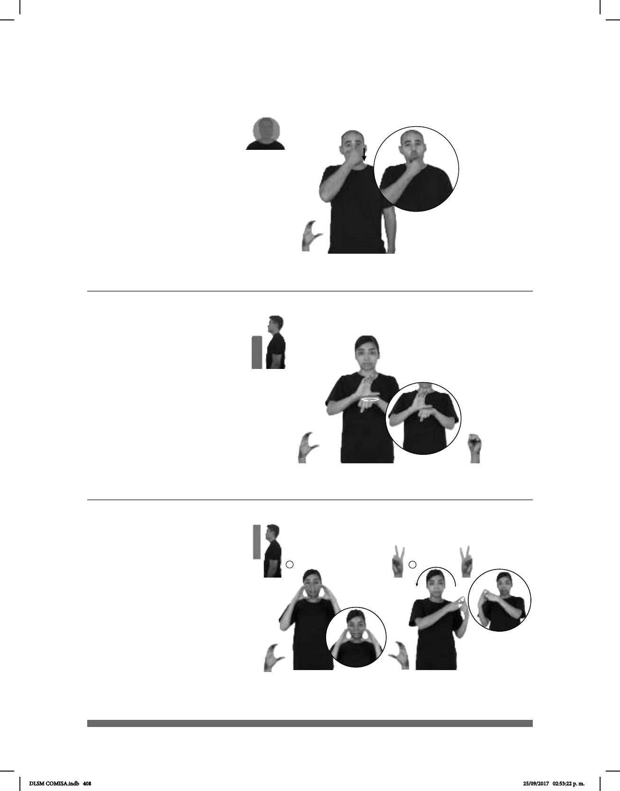

408
Seña: SM
C.1
Palma hacia adentro.
De la nariz a la barbilla.
Recto.
Mejillas
succionadas, labios protruidos.
sust. f. Parte delantera de la
cabeza humana, desde la frente hasta la
barba, que se caracteriza por tener una
(C-37)
CARA-DELGADA dm-ALAN pos-SUYO
de él
PAPÁ
El papá de Alan tiene la cara delgada.
Seña: SB
MD C.1, MB S.1
MD palma oblicua
hacia la izquierda y hacia afuera.
MB palma hacia abajo.
A la altura del pecho.
MD sobre MB.
La MD se mueve
formando círculos.
Político mexicano que
1994.
(C-38)
__o.i.p_
ANTES PRESIDENTE MÉXICO ¿QUIÉN? CARLOS-SALINAS-DE-GORTARI
¿Quién fue el presidente de México? Carlos Salinas de Gortari.
Seña: SC: I. y II. SS
I. Palmas hacia el centro; II.
Palmas hacia adentro.
I. A la altura de la boca; II. A
la altura de los hombros del lado derecho
al lado izquierdo MD sobre MB.
II. Los brazos se mueven
formando un arco.
I. La boca se abre
y se cierra.
sust. Cadena de restaurantes
de hamburguesas y comida rápida cuya
sede central se localiza en Estados Unidos.
®
(C-39)
AYER pos-MI MAMÁ CARL’S JR. COMER
Ayer mi mamá comió en Carl’s Jr.
DLSM COMISA.indb 408 25/09/2017 02:53:22 p. m.